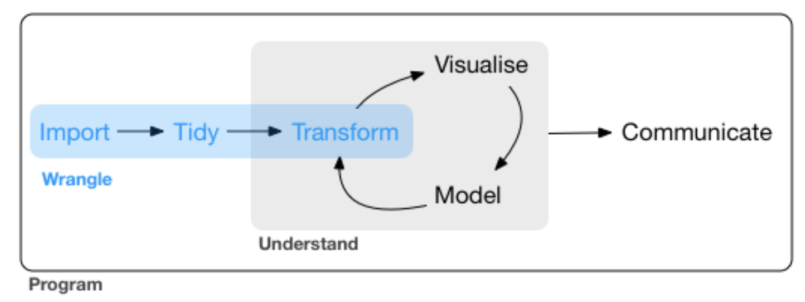
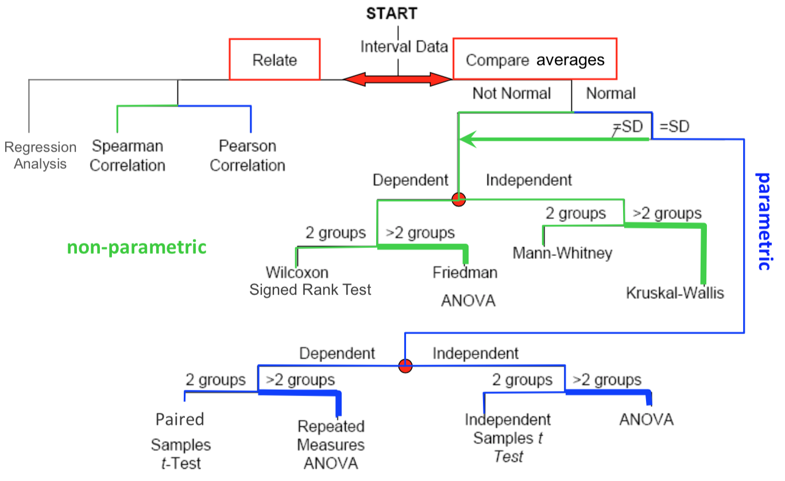
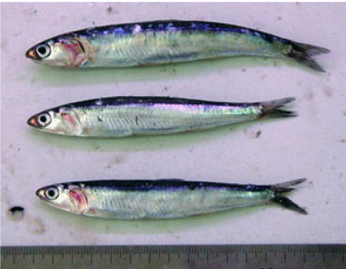
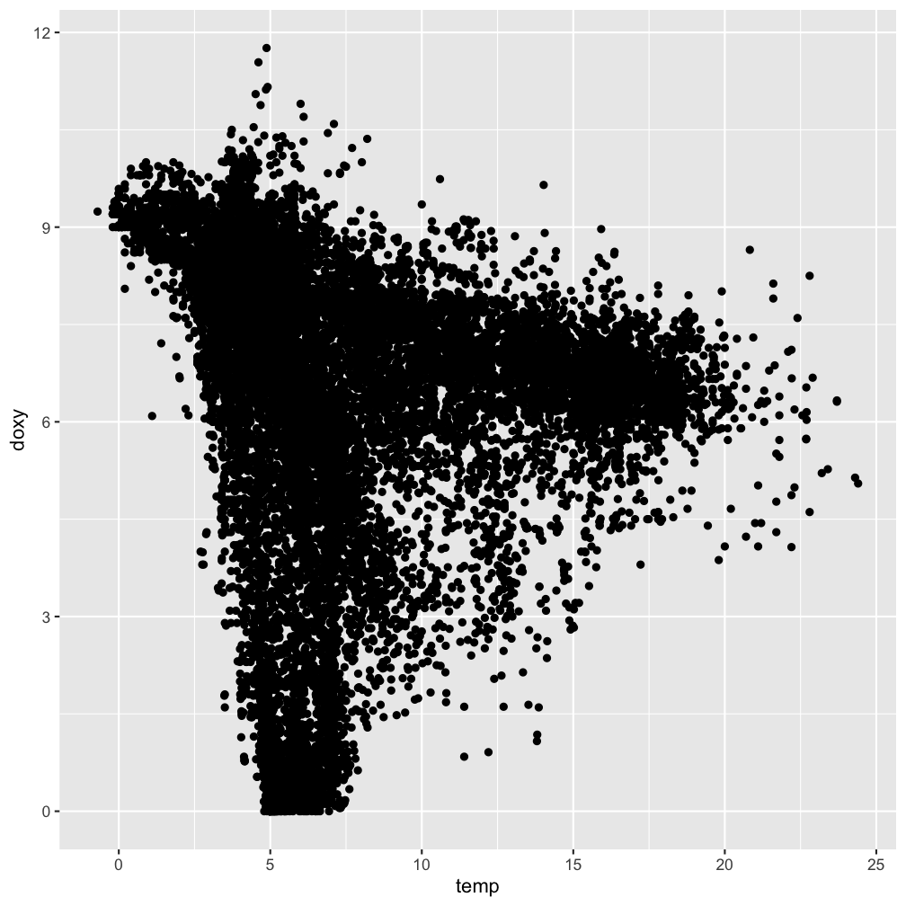
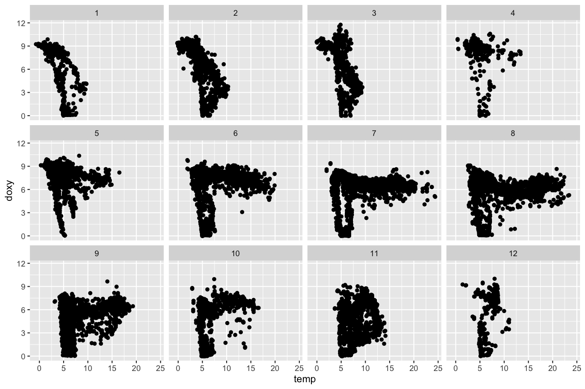

Datenanalyse mit R
8 - Einfache Tests in R
Saskia A. Otto
BSH 11/02 - 13/02 2019
Den Kreis schließen


source: R for Data Science by Wickam & Grolemund, 2017 (licensed under CC-BY-NC-ND 3.0 US)
Deskriptive Statistik

Parameter der Zentriertheit und Streuung
- Modalwert: Keine built-in Function
- Median:
median(x)orquantile(x, probs = 0.5) - Arithmetischer Mittelwert:
mean() - Gewichteter Mittelwert:
weighted.mean(x, w, ...) - Range:
range() - Varianz:
var() - Standardabweichung:
sd() - Standardfehler: Keine built-in Function (
sd(x)/sqrt(length(x))) - Variationskoeffizient: Keine built-in Function (
sd(v)/mean(v))
Flowchart zur Auswahl des passenden Statistiktest

Beispieldaten: Anchovislänge in 2 Gebieten
 Vergleich der Körperlänge von 2 Anchovispopulationen (Engraulis encrasicolus) im Golf von Biskaya (GoB, n = 100) und der Nordsee (NS, n = 60).
anchovis <- read_tsv("data/Anchovis.txt")
anchovis
## # A tibble: 100 x 2
## GoB NS
## <dbl> <dbl>
## 1 15.5 16.2
## 2 11.8 20.6
## 3 16.7 11.2
## 4 17.4 15.0
## 5 14.8 17.6
## 6 11.5 8.47
## 7 13.7 12.3
## 8 11.0 18.5
## 9 10.7 13.0
## 10 19.1 16.2
## # … with 90 more rows
Tests zur Überprüfung auf Normalität
Kolmogorov-Smirnov Test: ks.test()
- Vorteile: Verteilungs-unabhängig; robuster bei Vorhandensein von Autokorrelation
- Disadvantage: geringere Teststärke
Shapiro-Wilk Test: shapiro.test()
- Vorteile: hohe Teststärke bei einer Reihe von nicht-normalen Verteilungen und kleinen Stichproben
- Nachteil: weniger sinnvoll wenn Autokorrelation vorliegt
Tests zur Überprüfung auf Normalität in R
shapiro.test(anchovis$GoB)
##
## Shapiro-Wilk normality test
##
## data: anchovis$GoB
## W = 0.98998, p-value = 0.6633
ks.test(anchovis$GoB, "pnorm", mean(anchovis$GoB), sd(anchovis$GoB))
##
## One-sample Kolmogorov-Smirnov test
##
## data: anchovis$GoB
## D = 0.084533, p-value = 0.4724
## alternative hypothesis: two-sided
Tests zur Überprüfung auf Homogenität
F-Test - var.test()
- Einfachster Test
- Vergleicht Varianzen von 2 Gruppen indem der Quotzient gebildet wird. Wenn der Quotient 1 beträgt sind die Varianzen homogen.
- Nachteil: Verteilung beider Gruppen müssen normal sein.
Levene’s Test - car::leveneTest()
- Vergleicht die Varianz von 2 und mehr Gruppen (wichtig bei ANOVA)
- Braucht keine Normalverteilung
Tests zur Überprüfung auf Homogenität in R
var.test(anchovis$GoB, anchovis$NS)
##
## F test to compare two variances
##
## data: anchovis$GoB and anchovis$NS
## F = 0.40856, num df = 99, denom df = 59, p-value = 8.153e-05
## alternative hypothesis: true ratio of variances is not equal to 1
## 95 percent confidence interval:
## 0.2545613 0.6382275
## sample estimates:
## ratio of variances
## 0.4085562
Tests zur Überprüfung auf Homogenität in R
Daten müssen im langen Format sein und die Gruppenvariable ein Faktor:
anchovis_l <- gather(anchovis, NS, GoB, key = "region", value = "length")
anchovis_l$region <- as.factor(anchovis_l$region)
car::leveneTest(anchovis_l$length, group = anchovis_l$region)
## Levene's Test for Homogeneity of Variance (center = median)
## Df F value Pr(>F)
## group 1 17.256 5.333e-05 ***
## 158
## ---
## Signif. codes: 0 '***' 0.001 '**' 0.01 '*' 0.05 '.' 0.1 ' ' 1
Parametrische 2-Stichproben Tests in R: t.test()
t.test(x, y=NULL, alternative = c("two.sided", "less", "greater"),
mu = 0, paired = FALSE, var.equal = FALSE, conf.level = 0.95, ...)
→ Default ist der unabhängige 1 bzw. 2-Stichproben test mit 2-seitiger Hypothese und gleicher Varianz.
Bei einseitigen Hypothesen ist die Richtung wichtig:
- 1-seitig: H1:µ1>µ2 (x>y) →
alternative="greater" - 1-seitig: H1:µ1<µ2 (x<y) →
alternative="less"
Parametrische 2-Stichproben Tests in R: t.test()
t.test(x = anchovis$GoB, y = anchovis$NS, var.equal = FALSE)
##
## Welch Two Sample t-test
##
## data: anchovis$GoB and anchovis$NS
## t = -1.5253, df = 88.309, p-value = 0.1307
## alternative hypothesis: true difference in means is not equal to 0
## 95 percent confidence interval:
## -1.7257345 0.2269124
## sample estimates:
## mean of x mean of y
## 13.51690 14.26631
Nicht-parametrische 2-Stichproben Tests in R: wilcox.test()
wilcox.test(x, y=NULL, alternative = c("two.sided", "less", "greater"),
mu = 0, paired = FALSE, exact=NULL, correct=TRUE, conf.int=FALSE,
conf.level = 0.95, ...)
→ Default ist der unabhängige 1 bzw. 2-Stichproben test mit 2-seitiger Hypothese ( = Mann Whitney U)
Nicht-parametrische Mehrstichproben Test
- Friedman test ("Friedman Rangsummen Test")
- Kruskal-Wallis Test (H-Test)
kruskal.test( length ~ region, data = anchovis_l) # lange Daten nötig
##
## Kruskal-Wallis rank sum test
##
## data: length by region
## Kruskal-Wallis chi-squared = 3.0808, df = 1, p-value = 0.07922
Korrelation: cor() und cor.test()
Parametrisch: Pearson Product Moment Correlation Coefficient
cor(x = hydro$temp, y = hydro$doxy, use = "complete.obs") # (pearson ist default)
## [1] -0.1208818
cor.test(x = hydro$temp, y = hydro$doxy)
##
## Pearson's product-moment correlation
##
## data: hydro$temp and hydro$doxy
## t = -18.138, df = 22184, p-value < 2.2e-16
## alternative hypothesis: true correlation is not equal to 0
## 95 percent confidence interval:
## -0.1338277 -0.1078948
## sample estimates:
## cor
## -0.1208818
Korrelation: cor() und cor.test()
Nicht-Parametrisch: Spearman Rank Correlation Coefficient
cor(x = hydro$temp, y = hydro$doxy, method = "spearman", use = "complete.obs")
## [1] -0.4434386
cor.test(x = hydro$temp, y = hydro$doxy, method = "spearman")
##
## Spearman's rank correlation rho
##
## data: hydro$temp and hydro$doxy
## S = 2.6271e+12, p-value < 2.2e-16
## alternative hypothesis: true rho is not equal to 0
## sample estimates:
## rho
## -0.4434386
Vergleiche grafisch
ggplot(hydro,
aes(x = temp, y = doxy)) +
geom_point()

Monatlich aufgelöst
ggplot(hydro, aes(x = temp, y = doxy)) +
geom_point() +
facet_wrap(~month, ncol = 4, nrow = 3)

Übersicht an neuen Funktionen
Deskriptive Statistiken: median(), mean(), weighted.mean(), range(), var(), sd(), quantile(),
Testverfahren:
ks.test(), shapiro.test(), var.test(), car::leveneTest(),
t.test(), wilcox.test(), kruskal.test()
cor(), cor.test()
How do you feel now.....?
Total konfus?

Hmmh, dann solltest Du Dir vielleicht nochmal in einem der Grundlagen Statistikbücher schmökern.
Total gelangweilt?

Kein Problem, in der nächsten Lektion kommen die spannderen statistischen Modelle....
Absolut zufrieden?
Dann hol Dir einen Kaffee, lehn Dich zurück und genieße den Rest des Tages...!

Bei weiteren Fragen kontaktieren Sie mich unter:
saskia.otto@uni-hamburg.de
http://www.researchgate.net/profile/Saskia_Otto
http://www.github.com/saskiaotto

Diese Arbeit ist lizensiert unter der
Creative Commons Attribution-ShareAlike 4.0 International License
mit Ausnahme externer
Materialien gekennzeichnet durch die source: Angabe.
Bild auf Titel- und Abschlussfolie: Frühjahrsblüte in der Nordsee
USGS/NASA Landsat:
Spring Color in the North Sea, Landsat 8 - OLI, May 7, 2018
(unter CC0 lizenz)